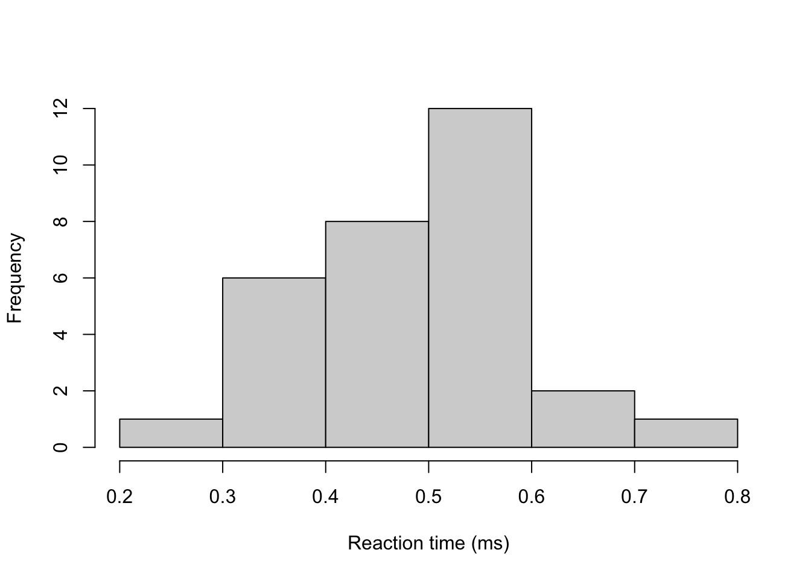

Chapter 4 Predicition
In many cases, although we are interested in estimating the model parameters, what we’re really interested in is predicting new values, whose distribution is determined by the model parameters.
Definition 4.1 Suppose we observe some data \(\boldsymbol{y}\) and derive the posterior distribution \(\pi(\theta \mid \boldsymbol{y})\). The quantity we are interested in is some future observation \(z\), we would like to the distribution of \(z\) given the observed data \(\boldsymbol{y}\), \(p(z \mid \boldsymbol{y})\). This distribution, known as the posterior predictive distribution of \(z\), must be exhibited as a mixture distribution over the possible values of \(\theta\). We must write \[ p(z \mid \boldsymbol{y}) = \int \pi(z \mid \theta) \pi(\theta \mid \boldsymbol{y})\, d\theta. \]
Example 4.1 Students have to submit coursework for a particular statistical modules. However, each semester a number of students miss the deadline and hand in their coursework late. Last year, three out of 20 students handed their coursework in late. This year, the course has thirty students in. How many students can we expect to hand in their coursework late?
We can model the number of students handing in late \(X\), using a Binomial distribution, \(Y \sim \textrm{Bin}(n, \theta)\). As in Example 3.1, we assign a uniform prior distribution to \(\theta \sim U[0, 1]\). Given then observed data, we can derive \(\theta \mid \boldsymbol{y} \sim Beta(4, 28)\) (See problem sheets for derivation).
Now we can derive the posterior predictive distribution of \(Z\), the number of students who hand in late. We model \(Z\) using a Binomial distribution, \(Z \sim \textrm{Bin}(30, \theta)\). The distribution of \(Z\) given the observed data is
\[\begin{align*} p(z \mid \boldsymbol{y}) &= \int_0^1 \pi(z \mid \theta) \pi(\theta \mid \boldsymbol{y})\, d\theta \\ & = \int_0^1 \begin{pmatrix} 30 \\ z \end{pmatrix} \theta^z (1-\theta)^{30 - z} \frac{\Gamma(32)}{\Gamma(4)\Gamma(28)}\theta^{3}(1-\theta)^{27}\, d\theta \\ & = \begin{pmatrix} 30 \\ z \end{pmatrix}\frac{\Gamma(32)}{\Gamma(4)\Gamma(28)}\int_0^1 \theta^{z + 3}(1-\theta)^{57 - z}\, d\theta \\ \end{align*}\] This integral is difficult to evaluate immediately. But by multiplying (and dividing outside the integral) by a constant, we can turn it into the density function of a Beta\((5 + z, 58 - z)\) random variable. This integrates to 1.
\[\begin{align*} p(z \mid \boldsymbol{y}) & = \begin{pmatrix} 30 \\ z \end{pmatrix}\frac{\Gamma(32)}{\Gamma(4)\Gamma(28)}\frac{\Gamma(z+4)\Gamma(58-z)}{\Gamma(62)}\int_0^1 \frac{\Gamma(62)}{\Gamma(z+4)\Gamma(58-z)}\theta^{z + 3}(1-\theta)^{57 - z}\, d\theta \\ & = \begin{pmatrix} 30 \\ z \end{pmatrix}\frac{\Gamma(32)\Gamma(z+4)\Gamma(58-z)}{\Gamma(4)\Gamma(28)\Gamma(62)} \quad \textrm{for } 0 \leq z \leq 30. \end{align*}\]
This code implements the distribution
beta.binom.posterior.predictive.distribution <- function(z){
numerator <- gamma(32)*gamma(z + 4)*gamma(58-z)
denominator <- gamma(4)*gamma(28)*gamma(62)
output <- choose(30, z)*numerator/denominator
return(output)
}We can check it’s correct, by seeing if it sums to one
z <- 0:30
ppd <- beta.binom.posterior.predictive.distribution(z)
sum(ppd)## [1] 1plot(z, ppd, xlab = "z", ylab = expression(p(z | theta))) The expected number of students who hand in late is 3.75 and there’s a 95% chance that up to 8 hand in late.
z%*%ppd #expectation## [,1]
## [1,] 3.75cbind(z, cumsum(ppd)) #CDF## z
## [1,] 0 0.06029453
## [2,] 1 0.18723037
## [3,] 2 0.35156696
## [4,] 3 0.51889148
## [5,] 4 0.66530044
## [6,] 5 0.78021765
## [7,] 6 0.86309065
## [8,] 7 0.91880359
## [9,] 8 0.95404202
## [10,] 9 0.97513714
## [11,] 10 0.98713498
## [12,] 11 0.99363285
## [13,] 12 0.99698773
## [14,] 13 0.99863936
## [15,] 14 0.99941423
## [16,] 15 0.99976022
## [17,] 16 0.99990696
## [18,] 17 0.99996591
## [19,] 18 0.99998826
## [20,] 19 0.99999622
## [21,] 20 0.99999887
## [22,] 21 0.99999969
## [23,] 22 0.99999992
## [24,] 23 0.99999998
## [25,] 24 1.00000000
## [26,] 25 1.00000000
## [27,] 26 1.00000000
## [28,] 27 1.00000000
## [29,] 28 1.00000000
## [30,] 29 1.00000000
## [31,] 30 1.000000004.1 Non-informative prior distibrutions
We have seen in a few examples how the choice of prior distribution can affect that posterior distributions and the resulting conclusions. As the choice of prior distribution is subjective, it is the main criticism of Bayesian inference. A possible way around this is to use a prior distribution that reflects a lack of information about \(\theta\).
Definition 4.2 A non-informative prior distribution is a prior distribution that places equal weight on the every possible value of \(\theta\).
Example 4.2 In Example 3.1, we assigned a uniform prior distirbution to the parameter \(\theta\).